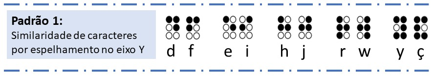
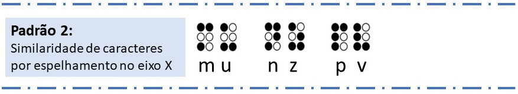
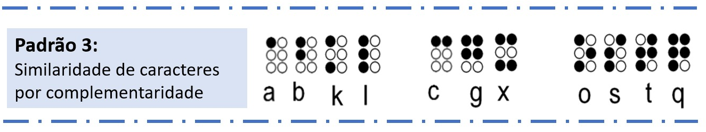

Padrões Braille
Iniciando a partir desta compreensão e objetivando auxiliar professores videntes no aprendizado da linguagem Braille,
de forma mais rápida e de uma perspectiva mais fácil, visto que a leitura é feita de forma visual, esta plataforma traz uma proposta de aprendizagem baseada em padrões
de similaridade dos caracteres Braille.
Organizando as combinações de letras com base na semelhança visual dos caracteres Braille, foi concebido três tipos de padrões.
-
No 1º padrão temos letras que estão agrupadas devido à sua semelhança de espelhamento ao longo do eixo y, das quais temos D F, E I, H J, R W, e Y Ç.

-
O 2º padrão acompanha as letras M U, N Z e P V, porém, desta vez a similaridade está refletida no eixo x.

-
O 3º padrão, têm sua similaridade através da complementaridade e está organizado da seguinte forma, 2 grupos de 4 letras e 1 grupo de 3 letras A B K L, C G X e O S T Q, que seguem um padrão sequencial do preenchimento da célula Braille onde
cada caractere complementa e ajuda a lembrar do próximo.

Voltar
Exercício